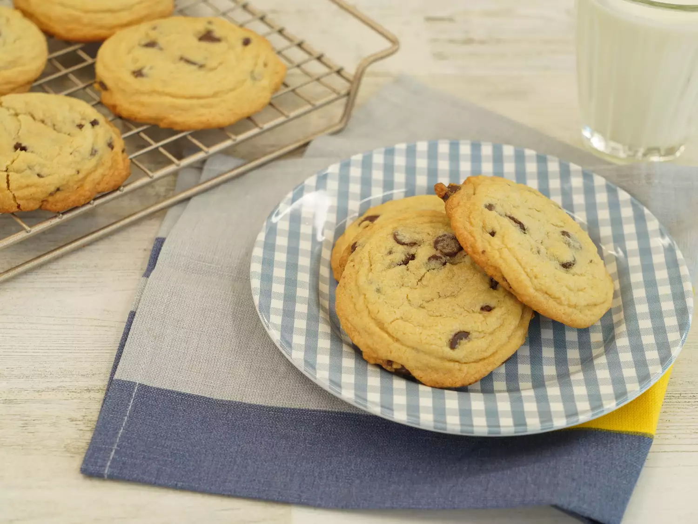

Home
Cookies

Description
This chocolate chip cookie recipe makes dozens of cookies with crisp edges, chewy centers, and melty chocolate chips. It is truly the best! With more than 14,000 rave reviews from the Allrecipes community, this top-rated chocolate chip cookie recipe will quickly become your go-to for every occasion.
Ingredients
- Butter
- Eggs
- Vanilla
- Baking Soda
- Water
- Salt
- Flour
Steps
- Preheat the oven to 350 degrees F (175 degrees C). Beat butter, white sugar, and brown sugar together in a large bowl with an electric mixer until smooth and creamy.
- Beat in eggs, one at a time, then stir in vanilla.
- Dissolve baking soda in hot water; add to batter along with salt and mix until combined.
- Stir in flour, chocolate chips, and walnuts until a soft dough forms.
- Drop rounded spoonfuls of cookie dough 2 inches apart onto ungreased baking sheets.